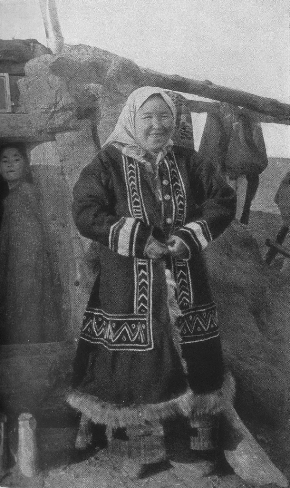
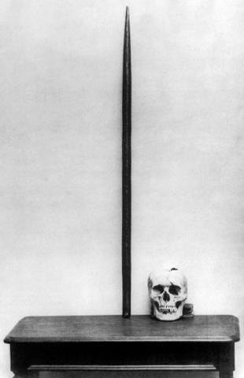

Чудеса · главное
Восемнадцать лет и одно чудо
Епископы США проголосовали за начало процесса беатификации Марии Миддлтон, умершей в 2020 году. Разбираем, как Церковь проверяет святость — и что в этом деле уже считается свидетельством.
В Балтиморе, на осенней пленарной ассамблее Конференции католических епископов США, епископы проголосовали за то, чтобы продвинуть дело о беатификации и канонизации Марии Миддлтон — девушки из округа Бакс, штат Пенсильвания, умершей в 2020 году от неоперабельной опухоли мозга. Ей было восемнадцать.
Епископ Томас Папроцки, возглавляющий комитет по каноническому праву и церковному управлению, поставил её в один ряд с Жанной д’Арк, Алоизием Гонзагой, Франсишку и Жасинтой Марту и Карло Акутисом — то есть с теми, кого Церковь признала святыми очень молодыми. Формулировка при этом осторожная: не «святая», а «возможность начать процесс».
Биография, которую приводят в отчёте, намеренно обыкновенная: родилась 10 сентября 2002 года, любила спорт и ирландские танцы, слушала Шона Мендеса и Jonas Brothers, состояла в National Honor Society, была старостой класса, волонтёрила в школе и служила в приходе. Всё, что дальше, держится на другом материале.
Мать, Сьюзен, с трёх лет водила её каждую неделю на евхаристическое поклонение в Национальную святыню Ченстоховской Богоматери в Дойлстауне. Там девочка выучила Часовню Божественного Милосердия и розарий — то есть получила не общее религиозное воспитание, а конкретную практику, повторяемую годами.
Главный документ дела — не рассказы очевидцев, а дневники. Первая запись, сделанная в одиннадцать лет, состоит из двух слов: «Бог милостив». Епископ говорит о «духовных писаниях, обнаруженных в её дневниках», как о растущем свидетельстве — и это точная формулировка: Церковь в таких делах читает тексты, а не собирает слухи.
Практическая сторона важнее сентиментальной. Беатификация — не голосование епископов: голосование лишь разрешает начать. Дальше идут епархиальное расследование, сбор свидетельств под присягой, богословская экспертиза написанного, и, как правило, признанное чудо, приписываемое её заступничеству; для канонизации нужно ещё одно. Именно на этом шаге подобные дела чаще всего и останавливаются — не на биографии, а на доказательстве.
Пока процесс идёт, Мария Миддлтон официально не святая и не блаженная. Она — «Слуга Божия», и это не поэтический оборот, а юридический термин, за которым стоит долгая машина: постулатор, врачи, архивисты, тома «positio». Восемнадцатилетняя девушка из Пенсильвании попадает в процедуру, рассчитанную на десятилетия.
Скептическая сноска, без которой номер был бы нечестным. Дневник подростка — свидетельство о внутренней жизни, но не доказательство вмешательства извне. Церковь это понимает лучше, чем её критики: поэтому в деле требуется медицинское заключение о чуде, а не рассказ о нём.
Коротко
- Что случилось17 ноября 2026 года епископы США в Балтиморе проголосовали за начало процесса беатификации Марии Миддлтон (2002–2020).
- Кто онаУроженка округа Бакс, Пенсильвания; умерла в 18 лет от неоперабельной опухоли мозга.
- Что дальшеЕпархиальное расследование, богословская экспертиза текстов и, как правило, признанное чудо.
Что здесь факт, а что — процедура
Факт: голосование 17 ноября в Балтиморе, год рождения и смерти, диагноз, дневниковая запись «Бог милостив» — из отчёта Catholic News Agency со ссылкой на выступление епископа Папроцки.
Не факт: что она святая и что её заступничество уже кого-то исцелило. Голосование открывает процесс, а не закрывает его; публично заявленного чуда в деле пока нет.
Небо
Второй материал · 5 минутКамень, который тормозит не там
Астероид 1998 KY26 ускоряется так, как не должен. Новая работа снимает главное объяснение — и оставляет астрономам ждать 2031 года.
Объект 1998 KY26 — тридцать шесть футов в поперечнике, то есть около одиннадцати метров, и полный оборот вокруг своей оси за пять с половиной минут. Формально это астероид, но ведёт он себя не по-астероидному: при движении вокруг Солнца у него есть небольшое негравитационное ускорение.
Стандартное объяснение — «тёмная комета»: лёд под коркой нагревается, водяной пар выходит и работает как слабый двигатель, но хвоста и комы при этом не видно. Именно из-за невидимого выхлопа такие объекты и выделили в отдельный класс.
Корбин Хансен и Масатоши Хирабаяши из Технологического института Джорджии построили трёхмерные тепловые модели и получили обратное. По их расчётам, температура внутри объекта слишком высока, чтобы лёд сохранялся сколько-нибудь долго: даже если бы вода составляла один процент массы, она ушла бы примерно за две тысячи лет.
Альтернатива, которую они предлагают, прозаичнее: давление солнечного света и теплового излучения, то есть эффект Ярковского в том или ином виде — без всякой воды. Красивая версия с ледяным двигателем уступает место скучной, но считаемой.
Проверить это можно только на месте. Японский аппарат «Хаябуса-2», уже отработавший на Рюгу, должен подойти к 1998 KY26 в 2031 году — и тогда тепловая модель либо подтвердится, либо развалится. Работа Хансена и Хирабаяши вышла в журнале Icarus.
Почему это аномальщина, а не заметка о малых телах. Тёмные кометы — класс, который до 2016 года толком не считали: объекты без хвоста, но с негравитационным ускорением. Пока их объясняют льдом, всё сходится. Как только лёд убрали, камень снова становится непонятным — и это честное состояние вопроса, а не сенсация.
Былички
Заметка · 3 минутыПлёнка 1967 года: семья сказала вслух
Фильм «Capturing Bigfoot» показывает новые кадры и заставляет родных Роджера Паттерсона подтвердить то, о чём шептались полвека.
Документальный фильм Марка Эванса «Capturing Bigfoot» (2026) разбирает плёнку Паттерсона — Гимлина: те самые 59 секунд, снятые в 1967 году у Блафф-Крик в Калифорнии, которые полвека оставались главным «документом» бигфута.
По сообщениям Los Angeles Times и Esquire, в фильме впервые показаны новые кадры, а сын оператора Клинт Паттерсон и вдова Патриция подтвердили на камеру, что съёмка была постановкой. Заголовок LA Times прямой: «Was Bigfoot a hoax? In “Capturing Bigfoot,” the answer is yes».
Для жанра здесь важна механика, а не разоблачение. Миф держался не на вере, а на отсутствии прямого признания участников: плёнка была не доказательством, а молчанием. Как только молчание кончилось, рассыпалось и доказательство.
Реакция сообщества, по описанию Business Insider, была тяжёлой — для части исследователей это не торжество скептика, а потеря точки опоры, на которой держались десятилетия работы. Так фольклор и устроен: он не спорит с фактом, он перестраивается вокруг него.
Дата события — октябрь 2026 (премьера и публикации), в номер попадает как старая находка с новой датой, а не как свежая новость.
Архив
Заметка · 3 минутыХатанга: что записали у долган
Летняя экспедиция уральских и коми фольклористов привезла мифологические рассказы, запреты и обряд очищения «Аластыыр».

Маршрут: Дудинка — село Хатанга — посёлки Новая и Новорыбная. Работали Институт гуманитарных исследований ПФИЦ УрО РАН и Институт языка, литературы и истории Коми научного центра, вместе со специалистами Арктического института искусств и культуры и Таймырского дома народного творчества.
Записаны образцы песенного фольклора и малых жанров, мифологические рассказы, поверья, запреты и предписания. Отдельным большим блоком — традиционная пища: технологии приготовления, особенности питания при кочевом образе жизни, способы заготовки продуктов длительного хранения.
Одна из изученных традиций — обряд очищения «Аластыыр» у восточных долган. Обряды такого типа в полевых записях интересны не «экзотикой», а тем, что их описывают сами носители: где начинается предписание, а где уже личный опыт.
Дальше — методическая обработка: материалы готовят к возможному включению в Реестр объектов нематериального этнокультурного достояния народов России, по итогам проекта обещан научно-популярный фильм.
Почему это в газете про необъяснимое: мифологический рассказ — тот же жанр, что русская быличка, короткий текст о встрече с «тем, кто есть». Такие записи — единственный способ увидеть, как рассказ живёт во рту рассказчика, а не в книге.
Книги
Заметка · 3 минутыЧернила, которые пережили текст — и съели его
Саймон Гарфилд разбирает рецепт железо-галловых чернил 1483 года: чем писали Гамлета, Декларацию независимости и Пятую Бетховена.
Рецепт из британского Национального архива, около 1483 года, начинается словами «To make hynke». В переводе на человеческий: чернильные орешки с дуба, железный купорос, гуммиарабик и вода; настаивать две недели, ежедневно помешивая.
Галлы — те самые «дубовые яблоки», которые вырастают, когда орехотворка откладывает яйцо в лист, а дерево выделяет дубильные и галловые кислоты. Дубильные кислоты плюс железо и дают густой фиолетово-чёрный цвет.
Железо-галловые чернила вытеснили сажевые, потому что были стойче. Стойкость оказалась преувеличена: тёмный цвет со временем уходит в бурый, а сама жидкость химически агрессивна — особенно на пергамене и особенно при перепадах температуры. Работать с ней советуют в перчатках и подальше от глаз.
Оттуда же бытовые детали письма: готовую страницу присыпали мелким порошком — пемзой или толчёной костью каракатицы, — чтобы чернила сохли быстрее. Автор напоминает, что отсюда и выражение «done and dusted».
Архивный вывод звучит неприятно: то, что мы считаем «вечным», разрушает себя изнутри. Документ переживает автора, но не обязательно переживает собственные чернила — и это отдельная причина, по которой оцифровка старых рукописей идёт быстрее, чем их реставрация.
Лаборатория
Заметка · 4 минутыЧереп, железо и поправка к легенде
Люди с повреждениями вентромедиальной префронтальной коры не отказываются сопереживать — они хуже читают эмоции, показывает новое исследование.

С 1848 года, когда железнодорожный рабочий Финеас Гейдж выжил после того, как лом прошёл через его череп, повреждение вентромедиальной префронтальной коры считается причиной «социального равнодушия» — вплоть до сравнений с психопатическими чертами.
Новая работа в Social Cognitive and Affective Neuroscience (старший автор — Дэниел Транел) проверяла не способность, а желание. Участникам предлагали задания, вызывающие сопереживание; люди с локальными повреждениями этой области соглашались на них так же часто, как здоровые взрослые и как пациенты с травмами в других отделах мозга.
Вывод осторожный: дело не в нежелании встать на чужое место, а в трудности распознавания эмоций. В эксперименте 2018 года те же пациенты не делились деньгами после того, как партнёр рассказывал о личной трагедии, — теперь это объясняют иначе: они не считывали сигнал, а не отказывались реагировать.
Почему это газетная история, а не заметка о нейронах. Гейдж — самый известный случай в истории нейронауки и одновременно её фольклор: рассказ о человеке, который «перестал быть собой», оброс деталями, которых в источниках 1848 года нет. Каждая новая работа подрезает легенду — но не отменяет вопроса, который она задала.